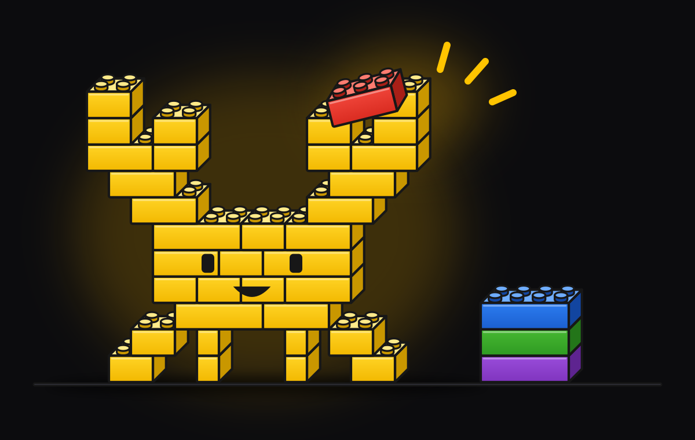
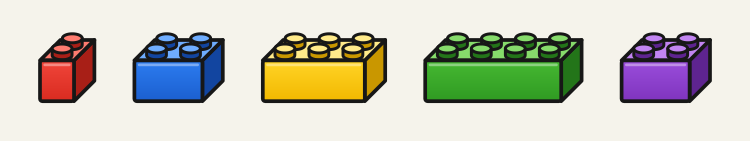
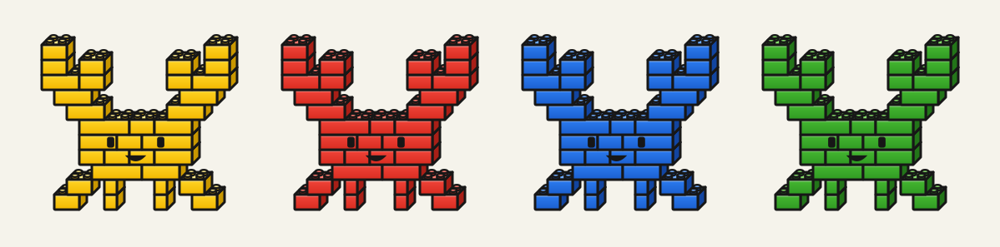

A primeira versão tratava cada célula como um ladrilho chapado, e isso não
lia como peça de montar. Esta revisão parte do pote de blocos de verdade:
peças com frente, topo e lateral, pinos em duas fileiras e juntas
escalonadas. A grade do terminal continua sendo o mapa; o que muda é como
cada célula é construída.
01 — NOVA DIREÇÃO
PEÇAS EMPILHADAS DE VERDADE

BitClaw montando
O caranguejo é construído fileira por fileira, como no pote: peças de 1 a 4
pinos, cada junta deslocada em relação à da fileira de baixo. A peça
vermelha na pinça e a pilha ao lado mostram o que ele faz: montar.
Arquivo: bricks-cena.svg.
02 — ANATOMIA DA PEÇA
O QUE FAZ PARECER BRINQUEDO

Três faces e pinos de verdade
Frente na cor base, topo mais claro, lateral mais escura. Os pinos são
cilindros com tampa, não bolinhas, e há duas fileiras deles, como nos
blocos da foto. Arquivo: bricks-pecas.svg.
O contorno some no preto, então a separação vem do topo claro e da lateral escura. bitclaw-bricks-dark.svg.

Variações de cor, só para aplicações
Vermelho, azul e verde vêm do pote e servem para estados e categorias
(erro, informação, sucesso). O mascote oficial segue amarelo.
Arquivo: bricks-feliz.svg.
Os SVGs são gerados por docs/identidade/gerar-bricks.py. Para
mudar a pose, edite o mapa CRAB e rode o script.
04 — PONTO DE PARTIDA
DUAS REFERÊNCIAS
BRAND BOOK · MICRO BRICK
Vetorial e detalhado. Módulos empilhados, pinos marcados, contorno
Core Black e faces em dois tons. A nova direção (seção 01) o refaz com peças de montar de verdade.
REFERÊNCIA ANTERIOR, SUBSTITUÍDA PELA SEÇÃO 01
TERMINAL · GRADE 10×6
Blocos quadrados sem contorno, sem olhos e sem sombra. Já lê como
caranguejo só pela silhueta: pinças, pinos e patas. É a versão
mais próxima do nome "bit".
05 — A GRADE COMO MASTER
PROPOSTA
Terminal atual
Desenho original, reproduzido célula a célula a partir do SVG do terminal.
Exploração: olhos como células
Dois olhos em tinta Core Black, ocupando células da grade, sem
sair do sistema. Só para mostrar que a expressão cabe na
construção por peças. A posição é uma sugestão.
06 — O QUE EU ENTENDI
SÍNTESE
FORMA
Caranguejo reconhecível pela silhueta: corpo, duas pinças e patas laterais.
MATERIAL
Peças de montar: cada divisão tem função construtiva, e o pino é a assinatura.
TOM
Curioso e metódico, amigável, mas com cara de ferramenta profissional.
07 — SUGESTÕES
PARA DEBATER
01
Um master só
Hoje o Micro Brick do brand book e o pixel do terminal são desenhos
diferentes. Sugiro escolher a grade como master e derivar o vetor a
partir dela, para que terminal, ícone e documentação sejam o mesmo
caranguejo.
02
Diferenciar do Claude
O caranguejo do Claude Code também é pixel art. Ser "parecido" ajuda a
comunicar que é uma ferramenta de código com IA, mas pode soar oficial
ou derivado. A diferença deve vir de elementos próprios: amarelo de
tijolo, pinos e a grade visível.
03
Contorno em duas versões
O brand book pede contorno Core Black, mas o terminal não tem contorno.
Proponho uma versão principal com contorno (documentos, site) e uma
versão sólida, sem contorno, para tamanhos pequenos e terminal.
04
Expressão por células
Os olhos podem ser células de tinta escura na grade. Isso mantém a
lógica de peças e evita rostos desenhados à parte, que não existem
no mundo dos blocos.
05
Versão mínima
Abaixo de cerca de 16px, pinos internos e divisões somem. Defino uma
versão reduzida que mantém só a silhueta com pinças e pinos, e uma
versão completa para tamanhos grandes.
06
Paleta restrita ao mascote
O mascote usa amarelo, amarelo claro nas faces superiores e preto.
As outras cores do sistema ficam para aplicações, para o mascote
não perder força.
08 — PALETA
MASCOTE + PEÇAS DE APLICAÇÃO
Claw Yellow#FFCC00
Light Yellow#FFE477
Side Yellow#D9AB00
Core Black#171717
Warm Paper#F5F3EB
Brick Red#E8352B
Brick Blue#1F6FE0
Brick Green#3DAE2B
Brick Purple#8E3FD1
09 — DECISÕES EM ABERTO
PRECISAM DE RESPOSTA
Master: grade ou vetor?
Grade (recomendado)
Vetor do Micro Brick
Contorno na versão principal?
Sim, com contorno Core Black
Não, sólido e com silhueta
Expressão do rosto?
Olhos como células
Sem rosto, só silhueta
10 — MICRO BRICK NO TERMINAL
GRADE 10×6 COMO MASTER
Micro Brick derivado da grade
Mesmo mapa do terminal, desenhado como peças: cada célula é um módulo
com contorno Core Black, face superior clara e face lateral em Side
Yellow. Pinos nas células de cima, emenda de tijolo no meio, pés
embaixo e olhos como células escuras.
██▄█▄▄█▄██
██▄████▄██
▄▀█▀▀█▀▄
Como fica no TUI
Renderização real do cabeçalho: 10 colunas por 3 linhas, com meio-blocos
(▀, ▄, █). Os olhos são buracos,
então aparecem como espaço no fundo escuro do terminal. O mesmo mapa
alimenta as animações em src/app/tui/brand.rs.
Próximo passo, se a nova direção for aprovada: definir o desenho final na grade,
gerar as versões (completa, mínima, com e sem contorno) e atualizar o brand
book com a decisão. Os desenhos originais continuam preservados como
referência histórica.